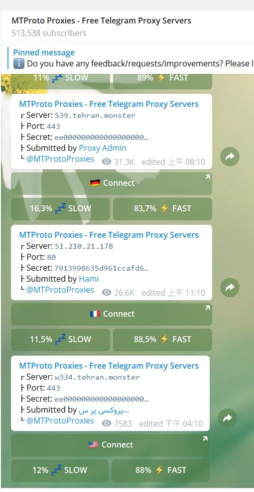
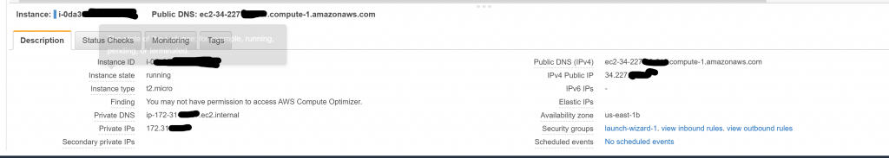

Telegram 加速器：MTProxy
前陣子因Line官方帳號收費機制更改之緣故，許多企業和非營利組織開始開設Telegram帳號，同時也使台灣的Telegram用戶增加許多。
但不知道在使用Telegram時是否會覺得有點卡卡的，傳圖或貼圖都要load一小陣子，無論用行動網路或固網無法隨傳隨到。原先筆者以為僅是因近期台灣TG用戶數提升所造成的，後來在TG群組內看到討論才知道原來TG的台灣區對應的Server在新加坡，而又對該處的線路似乎爛很久了(未查證，不大確定消息來源，就當都市傳說看吧w)，導致TG台灣連線不時會覺得頓頓卡卡的
所幸的是官方有釋出MTProxy，針對Telegram所設計的MTProto Proxy，你可以選擇使用網路上公開他人所架設的Proxy，像這個頻道內不定時會提供許多Proxy，使用方法也很簡單，點下Connect後確定即可。

Free MTProto Proxy Channel
而使用這些免費Proxy代價是在連線該Proxy時，聊天頁面可能會出現Proxy 提供者所設定之廣告頻道，而訊息安全性的部分，雖稍微翻一下TG的MTProto，看起來就算是過Proxy應該是沒啥問題（但非我的專業領域，如有誤歡迎更正）。個人使用這種公開Proxy的小感想：Ping略高，但因TG對延遲的要求並不重要所以沒差；廣告Channel可能會有阿拉伯人的刮痧拔罐(?)賣藥廣告，看了其實有點恐怖w；有時可能會三不五時無法連線，這倒是對使用體驗比較有影響，或者偶爾得換換Proxy試試
但若你像我一樣是個中重度TG用戶、有點資安潔癖（不想要封包過他人的Proxy）、不想透過網路上打包好的Scipts一鍵安裝，你可以選擇使用以下的簡易介紹架設自己的MTProxy
1. VPS
你可以用Google GCP, Amazon AWS, Oracle OCI, 前兩者第一次使用綁信用卡應該都會有免費額度，AWS亦可用edu信箱搭Github Student Pack領免費額度，抑或者也可以選擇一些便宜的VPS主機商Digital Ocean, Bandwangon之類的
不過個人最推薦的還是Oracle OCI，目前綁卡進去是終身免費兩個Instances(不確定未來是否會更改)，付費要另外升級帳戶，不用擔心額度超過被誤收，提供的instance以Proxy來說很夠用了，唯一缺點大概就是中國台灣可能會收到業務的推銷電話。Google一下應該也會有很多OCI開設教學，唯一要特別留意的大概就是一開始註冊帳號選定的地區是跟你免費主機地區綁死的（印象中我是選JP）
開好主機後留意一下VPS設定頁面防火牆的Port 443是否有記得開啟，或者你也可以像我一樣很懶得Port全開再用UFW來控管(X)
務必確定主機的443 port有開啟
sudo ufw allow 443
*(OCI可能需要需要移除iptables改用ufw以刪除oracle預先加入的防火牆規則, ref. link)
這邊我預設讀者有能力自行處理完畢，或者等我改天心情好再來寫一篇OCI簡單開設的教學(X)
2.Installation
想辦法用SSH連進去主機後輸入下列指令(OS : Ubuntu)
- Install dependencies
- Clone Codes
- Build
sudo apt install git curl build-essential libssl-dev zlib1g-dev
git clone https://github.com/TelegramMessenger/MTProxy
cd MTProxy
make && cd objs/bin
完成後會看到編譯完的執行檔(mtproto-proxy)
在/opt建立MTProxy資料夾並將執行檔Copy至此
sudo mkdir /opt/MTProxy
sudo cp mtproto-proxy /opt/MTProxy
cd /opt/MTProxy
向TG Server 索取ProxySecret和ConfigSample
產生用來連線到Proxy的亂數Secret
最後產生出來的一串亂數請先複製起來，待會建立Daemon會用到
sudo curl -s https://core.telegram.org/getProxySecret -o proxy-secret
sudo curl -s https://core.telegram.org/getProxyConfig -o proxy-multi.conf
head -c 16 /dev/urandom xxd -ps
基本上現在就可以透過
sudo /opt/MTProxy/mtproto-proxy -u nobody -p 8888 -H 443 -S <亂數secret> –aes-pwd proxy-secret proxy-multi.conf -M 1 –nat-info
這樣的指令來直接呼叫執行proxy
需特別留意的是，一般VPS(AWS,OCI確定都有)會過NAT，所以會需要在最後加上參數 –nat-info
Private IP 和Public IP應該在各自VPS的機器面板那邊可以查到

Public IP and Private IP (圖為AWS之面版)
完成後即可透過下面的連結(記得替換)或者是透過 @MTProxybot來建立下列的link
tg://proxy?server=PUBLIC_IP&port=443&secret=<亂數SECRET>
在任一Telegram Client中開啟連結即可加入proxy測試，若無法連線的話可以從下列方向下去查
- Private IP設定錯誤(NAT)
- 443 port 沒開(ubuntu裡 ufw或iptables, VPS那邊的設定面板)
但上述直接執行若是server重開、ssh斷掉之類的情況會導致proxy停掉，故以下建立daemon
3.Daemon
sudo nano /etc/systemd/system/MTProxy.service
在編輯器裡貼上以下設定檔，記得要替換掉剛剛亂數Secret和IP，完成後存檔即可
[Unit]
Description=MTProxy
After=network.target
[Service]
Type=simple
WorkingDirectory=/opt/MTProxy
ExecStart=/opt/MTProxy/mtproto-proxy -u nobody -p 8888 -H 443 -S <亂數secret> –aes-pwd proxy-secret proxy-multi.conf -M 1 –nat-info
Restart=on-failure
[Install]
WantedBy=multi-user.target
reload 和測試daemon
sudo systemctl daemon-reload
sudo systemctl restart MTProxy.service
sudo systemctl status MTProxy.service
沒意外的話應該會看到active(running)之類的字樣，沒問題再將其加入開機自動啟動即可
systemctl enable MTProxy.service